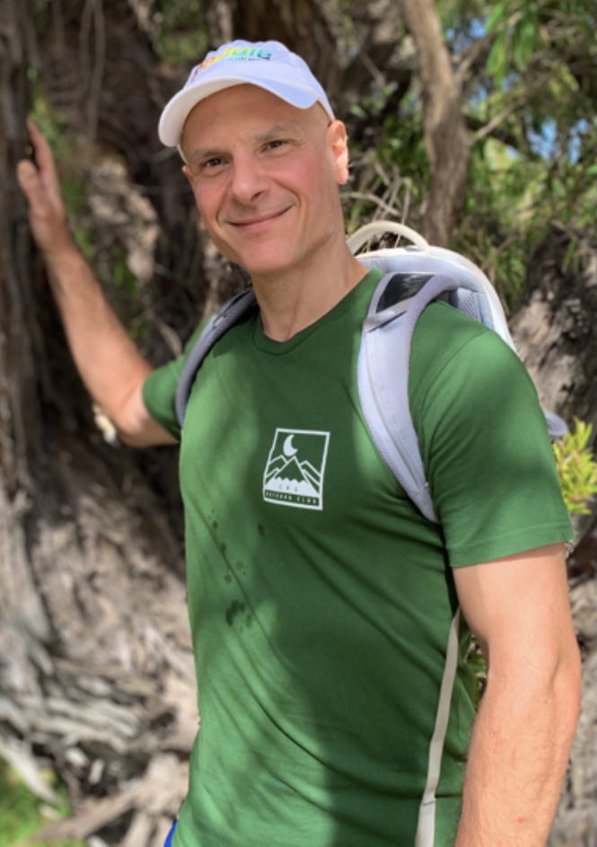

The topics for this third edition of NSFE are analysis and
applications of fractional and nonlocal equations.
Graduate students, postdocs, and
early career researchers are especially encouraged to attend.
Here are the poster, the school booklet and photos.
Mini-courses Keynote Lecturers:
|

|
Robert Lipton
Louisiana State University
Peridynamics
Lecture notes
Lecture 1: slides - video
Lecture 2: slides - video
Lecture 3: slides - video
|
Enrico Valdinoci
The University of Western Australia
The prescribed nonlocal mean
curvature equation
Lecture notes
Lecture 1: slides - video
Lecture 2: slides - video
Lecture 3: slides - video
|
Distinguished Invited
Speakers:
The
school will be held in BUILDING HERE at Iowa State University
campus in Ames,
- starting on Wednesday, June 16 at 8am,
and
- ending on Friday, June 18 at noon.
How
to get to THE BUILDING:
Registration and funding:
- There is no registration fee.
However, registration is required to attend. Please complete
this form.
Deadline for registration: DATE HERE.
- Graduate
students support (US based only): If you are a graduate
student and would like to apply for partial support for
travel expenses (US based students only), please indicate
that in the registration form by including your PhD
advisor's name, institution and email address. Please ask
your advisor to send a short letter of recommendation via
email to nsfe@iastate.edu Deadline to apply for graduate student
funding, including advisor's letter of recommendation: DATE
HERE
Lodging: Special rate
hotels
The following
hotels in Ames have agreed to reserve a block of rooms at
special rates for participants of NSFE 2027.
Directions:
- Ames is located in the center
of the State of Iowa, about 40 miles north of Des Moines, the
state capital, at the intersection of Interstate 35 and
Highway US-30.
- Ames has a public bus service
to campus called CyRide.
- If you plan to fly, the
nearest airport is Des Moines
International Airport (DSM).
See the airport website
for transportation services from DSM to Ames.
Contact:
Organizers: